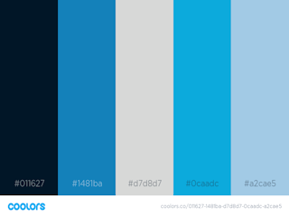

Color Palette
Color Layouts
Color scheme will be to use the dark blue (#011627) for the banner and borders. Navigation menu and footer will use the lighter blue color (#ocaadc). Section backgrounds will be light grey (#d7d8d7) or light blue (#a2cae5).